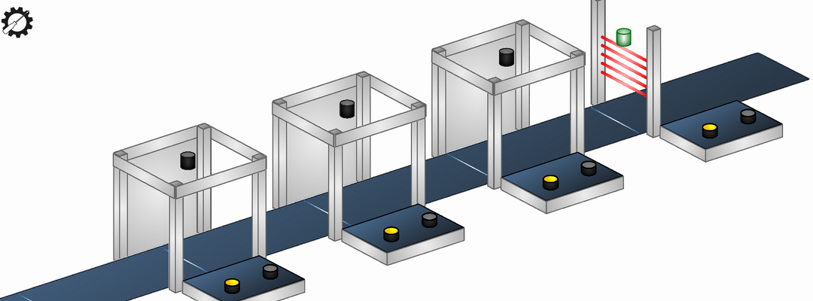
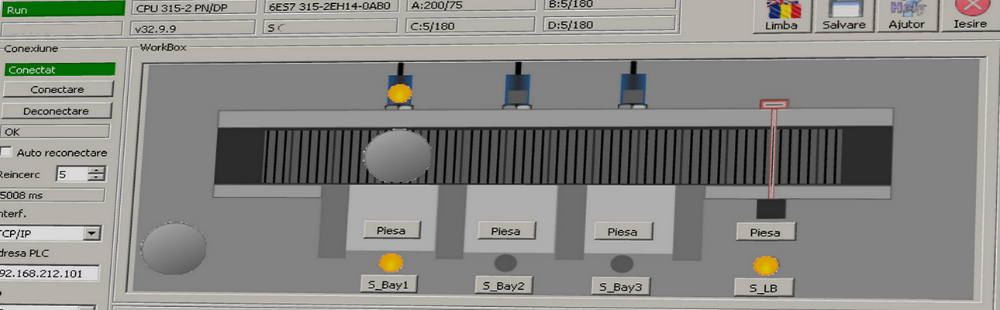

-
Cam410 is a small series of programs used to simulate the conveyor used in remote/online Sitrain (Step7 and TIA) trainings ...
-
Cam410, Cam410C, Cam410T
Simulator for TIA Pro, TIA Serv, Step7 Pro, Step7 Serv, etc...
Cam410 is a small simulator for the conveyor band used in Siemens SITRAIN trainings.
Cam410 may be connected to a real Step7 300 or Step7 1500 PLC using a TCP/IP connection.
The simulated conveyor is controlled by the outputs of the PLC, the conveyor band may be moved in both directions traversing the parts placed on the band.
A click with the mouse on any button of the simulated conveyor sets the corresponding input in the connected PLC.
Versions:
- v230124 [24.01.2023] Cam410T: Fork of Cam410C based on Cam410C v230124. First version with 3D simulation.
 - v230124 [24.01.2023] Cam410C: Improved icons and graphics.
- v230124 [24.01.2023] Cam410C: Improved icons and graphics.
- v221025 [25.10.2022] Cam410C: Bug Fixes (template activation error, etc.)
- v220321 [21.03.2022] Cam410C: Minor interface changes.
- v220117 [17.01.2022] Cam410C: Improved graphics and functional improvements regarding simulation speed.
- v210524 [24.05.2021] Cam410C: Scalable window.
- v210511 [11.05.2021] Cam410C: Test for a scalable window.
- v210509 [09.05.2021] Cam410C: Test on a common version for both TIA Portal and S7-300 training racks.
- v210407 [07.04.2021] Cam410C [Classic] [for S7-300]: Fork of Cam410. Adapted for S7-300 training rack.
- v210301 [01.03.2021] Cam410: Checkbox for quick change of addresses S7-1500 to ET200SP. Last version of Cam410. Replaced by Cam410C from Cam410C v210509
- v210123 [23.01.2021] Cam410T: Initial test for a 3D simulation based on OpenGL. Version only for tests, not functional.
- v201204 [04.12.2020] Cam410 [zip201215]: PID control simulation. Corrected some fonts, added scalability (fixed sizes).
- v201112 [12.11.2020] Cam410 [zip201201]: Change of analog inputs scale...
- v201029 [29.10.2020] Monitrain [zip201106]: Control code added on connectivity...
- v201017 [17.10.2020] Monitrain: 2.5D view added. Various functional improvements and bug fixes.
 - v200514 [14.05.2020] Monitrain: Animation speed control. Editable texts for button labels.
- v200428 [28.04.2020] Monitrain: First functional version. 2D fixed size. Set for TIA Portal training rack.
Projects build on Qt5, using Snap7 (by Davide Nardella).
Code on GitHub... Cam410 download ... -
Cam410S, Cam410hlp: Simulator for TIA Safety
Cam410S

Cam410s is a small simulator of the "labeling machine" used during the "TIA Safety" training...
Versions:
- v230124 [24.01.2023] Improved icons and graphics.
- v221017 [17.10.2022] Scalable window. Functional improvements. Bug fixes.
- v220222 [22.02.2022] New version for TIA Portal Safety v16/17 training rack. Various functional improvements and bug fixes.
- v210119 [19.01.2021] Bug fixes.
- v201204 [04.12.2020] [zip201218] First tests. 2.5D fixed size. Set for TIA Portal Safety v15 training rack.
Cam410hlp
Cam410hlp: is a small C# application used to control the "Safety Inputs" of a simulated PLC
Safety inputs are protected in the PLC and their value cannot be written from an external application.
PLC simulators such as PLCSIM Advanced maintain also this behaviour so that Safety Inputs remain protected.
Because of this, even when using S7-PLCSIM or S7-PLCSIM Advanced simulators, Cam410s can read both "standard" and "safety" PLC outputs, can write the "standard" PLC inputs but can not write "safety" PLC inputs values.
Cam410hlp is using PLCSIM Advanced API interface to help Cam410s control "safety" inputs of the simulated PLC.
Versions:
- v220330 [30.03.2022] Fixed "crash on downloading PLC program".
- v210104 [04.01.2021] First functional version.
Code on GitHub... Cam410s download ... Cam410hlp download ...